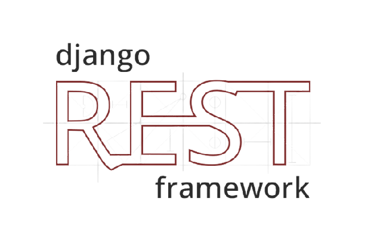
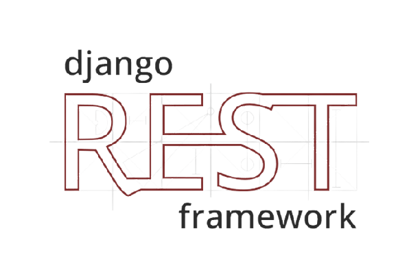
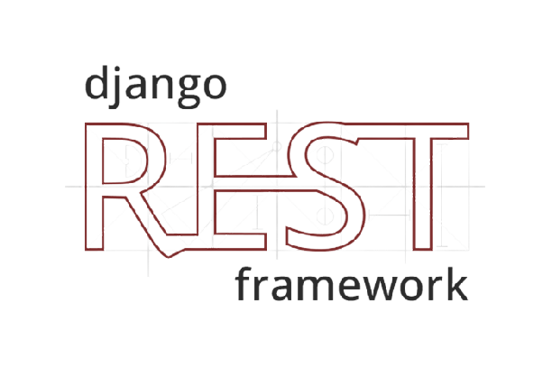

Main page
I mainly create code in core Python, while working with Web aplications in my work i found out it more intresting, so from this time this became my main programming route.
I have been working with: tkinter, psycopg, selenium, Django, GeoDjango.
In JavaScript,CSS,HTML i created this webpage, and some things in GeoDjango too,
Currently i have few opened projects within this technology i am gonna add the results here soon !
Technologies included to project down below: Python-GeoDjango, Postgres, Java Script, HTML5, CSS
Small testing project using Python
Flask framework it is simple create read application served on heroku server. No fronted framewok used here just HTML, CSS.
http://mcinek91.pythonanywhere.com/
Testing project using Python and Django  framework Bootstrap as a frontend and Postgres database
It is also include simple REST requests
framework Bootstrap as a frontend and Postgres database
It is also include simple REST requests
framework Bootstrap as a frontend and Postgres database
It is also include simple REST requests

Small testing project using Python and Django framework  Bootstrap as a frontend and
Bootstrap as a frontend and  Postgres database it also has delete option on each object in database
Postgres database it also has delete option on each object in database
framework Bootstrap as a frontend and Postgres database it also has delete option on each object in database
Actually my biggest project, it is quite complex, it fully based on API from CRM provider to company which i have worked.
1. Get data about client and just print it out on this panel
2. Make a request about documents which are placed in CRM, so if no specific documents in CRM - no documents in panel also
3. Payment documents are fully donwawdable from here, Panel has it`s own engine to fill up pdf schema documents based on CRM information, because in system payment documents are created on the fly.
4. Dashboard tab was invented to give clients view to their data in more representative way than from applications provided by inverters produceres. Here i utilize Chart.js library.
5. Panel give users ability to send questions for specified topic to CRM, this question is send to system as an email but more precisyly to email which belongs to department who knows how to take care of this question.
Django as backend, Bootstrap as a frontend and Postgres database, Chart.js for charts
Django as backend, Bootstrap as a frontend and Postgres database, Chart.js for charts